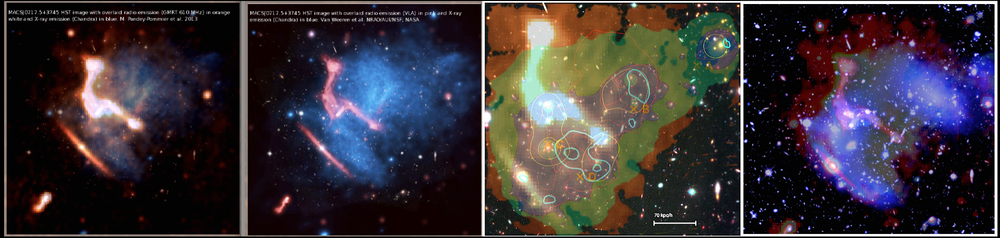
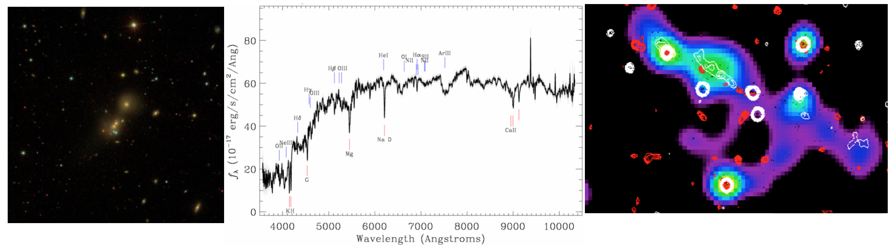
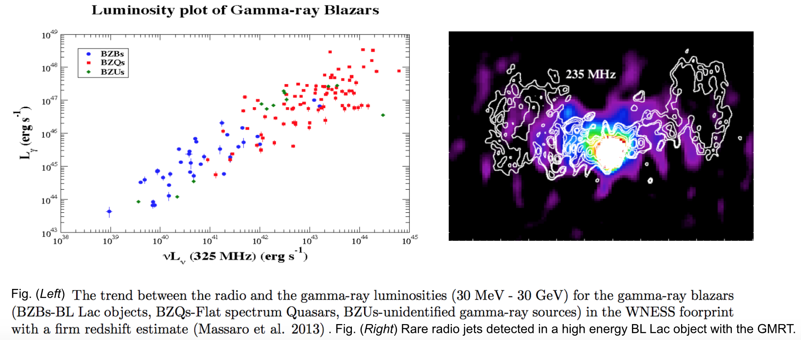

|
|

| Research Research
Projects:
Pandey-Pommier et al. 20151- Non thermal emission in Cluster of galaxies Clusters of galaxies provide powerful laboratories for the study of large scale structure formation and evolution in the Universe. They provide an independent platform to investigate various physical problems like collision of in-falling matter in the intra-cluster medium, thermal and non-thermal emitting intracluster gas, Sunyaev–Zel'dovich effect (SZE), gravitational lensing properties, Dark matter mass component and distribution of matter in clusters, etc.. Thanks, to their magnification properties, clusters also tend to magnify faint sources which lie at very high redshifts, and thus allow us to investigate the properties of most distant galaxies present in the early epochs of the Universe. Further, they also allow us to probe the role of the central super massive black hole (located in the Brightest Cluster Galaxy (BCGs)) in the formation and evolution of its host galaxies. Considering the rich astrophysical problems that galaxy clusters allow us to address, we are carrying out a low frequency radio survey combined with multi-wavelength study to probe the global properties of the cluster population, thanks to the new large scale surveys of clusters providing catalogues of >1000s merging of clusters (e.g. PLANCK, MACS, etc.). Combining several independent techniques (Radio, X-ray, IR, Optical and mm, etc.) we are carrying out a well defined study of multi-wavelength properties of clusters and galaxies within their environment. The above study will be used to address a wide range of astrophysical problems and will form a preparatory science case for the International Square Kilometer Array (SKA) project (Proceedings of Advancing Astrophysics with the Square Kilometre Array (AASKA14). 9 -13 June, 2014. Giardini Naxos, Italy 2015).  Fig. Massive galaxy cluster MACS J0717.5 + 3745: (Left) GMRT contours at 0.61 GHz overlaid on X-ray Chandra map (blue) (Pandey-Pommier et al. 2013), (Middle) VLA contours (pink) at 1.4 GHz overlaid on Chandra emission (blue) and HST image (black and white) extracted from van Weeren et al. 2014 (Right) Dark Matter (DM) mass distribution (green- brown, extracted from Medezinski et al. 2013) derived from strong and weak lensing model (blue contours) is overlaid on GMRT radio image from (left panel) for MACSJ0717.5+3745. The DM distribution follows the light (yellow contours) as determined by the member galaxies. The complex nature of the mass distribution demonstrates that a clear centre is not well-defined in this cluster as already seen in X-rays (red contour), and has several bright galaxies associated with the different mass clumps, indicating different sub-groups under collision in the central region of this cluster. 2-Jets and Optical hosts of radio loud AGNs Radio loud AGNs are predominantly found in massive elliptical host galaxies, harbouring jets and lobes which can extend to scales of hundreds of kilo-parsecs to mega-parsecs (as seen in Giant Radio Galaxies). These jets are known to interact with the environment in which the galaxy itself resides as well as the external interstellar medium. Thus studying the energetics and dynamics of the jets in radio loud AGNs as well as their optical hosts is vital, in order to understand the influence of galaxies on their environment as well as their energy loss mechanism. Many new radio loud AGNs are recently being discovered- thanks to low frequency survey, that tends to show compact core-extended jet (> 700 kpc) morphology. The fact that only 100s of such large-scale jet sources (> 700 kpc) are known as of now and our knowledge of the origin and evolution of such radio loud AGNs is still very poor, we are carrying out consolidated efforts to perform statistical studies of their spectral and morphological properties at multi-wavelengths. We expect to obtain specific details of the jet physics and energy loss mechanisms through the spectral properties in these newly discovered radio loud AGNs and study their evolution/interaction with the surrounding medium.  Fig. Giant radio galaxy- group of galaxies (left) hosting giant radio jets (right) at low radio frequencies (Heald et al. 2013, LOFAR Science Week, Apr 2014, Pandey-Pommier et al. 2014) 3-Variability in radio loud AGNs Blazars are the rarest and most extreme class of Active Galactic Nuclei (AGN), that dominate the census of the gamma−ray sky at high and very high energy (VHE, E > 0.1 TeV). Strong evidence exists for a highly significant correlation between the radio flux density (GHz range) and the high energy (E > 100 MeV) gamma−ray flux in blazars, as revealed by the Fermi Gamma−ray Space Telescope (Ackermann et al. 2011a). However, not all blazars detected in gamma−rays are explored to have radio counterparts down to MHz range and even rare are the ones that show compact−core and extended diffuse jet whose emission dominate at lower frequencies. We are carrying out a search for radio counterparts of blazars down to MHz range in order to extend the radio-gamma ray correlation at lower frequencies as well as discover their extended jet emission, if present. These sources being dominated by non−thermal (synchrotron and inverse Compton) emission from relativistic jet, offer important clues to the spectral and radiative processes in extra galactic objects, which in turn helps to provide constraint for their emission models. Further, multi−wavelength data provide crucial information for blazars spectral energy distributions (a distinctive double−peak pattern corresponding to the synchrotron and Compton emission mechanisms in the jet) from radio to gamma−rays (GeV and TeV energies), their trends with bolometric luminosity, and their correlated variability properties. Clearly, these results give an interesting insight of the emission mechanisms in blazars and highlight the importance of contribution from LOFAR and SKA in studying such high energy variable objects (Proceedings of Advancing Astrophysics with the Square Kilometre Array (AASKA14). 9 -13 June, 2014. Giardini Naxos, Italy 2015).  Contact: _______________________________________________________________________________________________________________________________________ MAMTA POMMIER (Mamta.Pommier@obspm.fr & mamta.pommier@univ-lyon1.fr) USN, Observatoire de Station de Radioastronomie de Nancay, Observatoire de Paris Route de Souesmes 18330 Nancay, France & Centre de Recherche Astrophysique de Lyon- Observatoire de Lyon, 9 av Charles Andre, 69561 Saint Genis Laval Cedex, France Tel: 0033 4 78 86 85 22 email: mamtapan@gmail.com Webpage: https://pommierm.github.io/index.html http://www.researchgate.net/profile/Mamta_Pommier  |